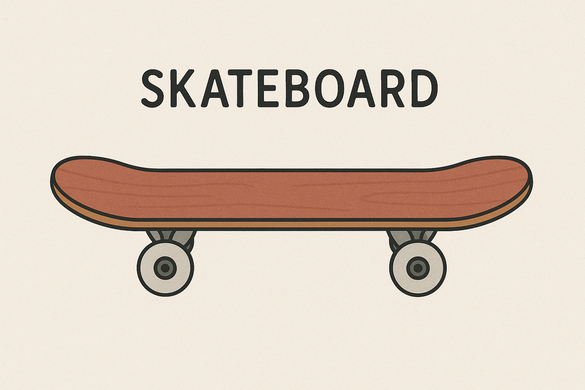

정의
스케이트보드는 네 개의 바퀴가 달린 데크(판자) 위에 올라타 다양한 기술을 구사하거나 주행을 즐기는 스포츠 도구입니다.
단순한 놀이기구에서 시작하여, 오늘날에는 익스트림 스포츠이자 도시 문화, 스트릿 패션과도 깊게 연관된 하나의 문화 장르로 자리잡았습니다.
스케이트보드는 균형 감각, 순발력, 창의력 등을 활용해 다양한 기술(트릭)을 구사할 수 있으며, 개성 표현의 수단이기도 합니다.
